📘 PERUMDA LEDGER
Tutorial Lengkap & Panduan Step-by-Step Cara Penggunaan
Versi 1.1.0 — SAK EP — Mei 2026
Perumda Pasar Banjarmasin
Sistem Akuntansi Terintegrasi
Daftar Isi
- Dashboard — Ringkasan Keuangan
- Jurnal Umum — Pencatatan Transaksi
- Chart of Accounts — Bagan Akun
- Buku Besar — General Ledger
- Piutang Usaha — Accounts Receivable
- Hutang Usaha — Accounts Payable
- Aset Tetap — Fixed Assets & Penyusutan
- Persediaan — Stok & Inventaris
- BBM Prabayar — Fuel Management
- Anggaran vs Realisasi — Budget Monitoring
- Laporan Keuangan — 25+ Financial Reports
- LRA — Laporan Realisasi Anggaran (8 Sub-Laporan)
- Rekonsiliasi Bank — Bank Reconciliation
- Import Data — Bulk Excel Import
- Pengaturan — System Configuration
1 Dashboard
/home
Halaman utama yang menampilkan ringkasan performa keuangan perusahaan dalam satu tampilan layar. Dirancang untuk memudahkan pimpinan mengambil keputusan dengan menyajikan metrik penting (KPI), notifikasi darurat, dan grafik tren visual.
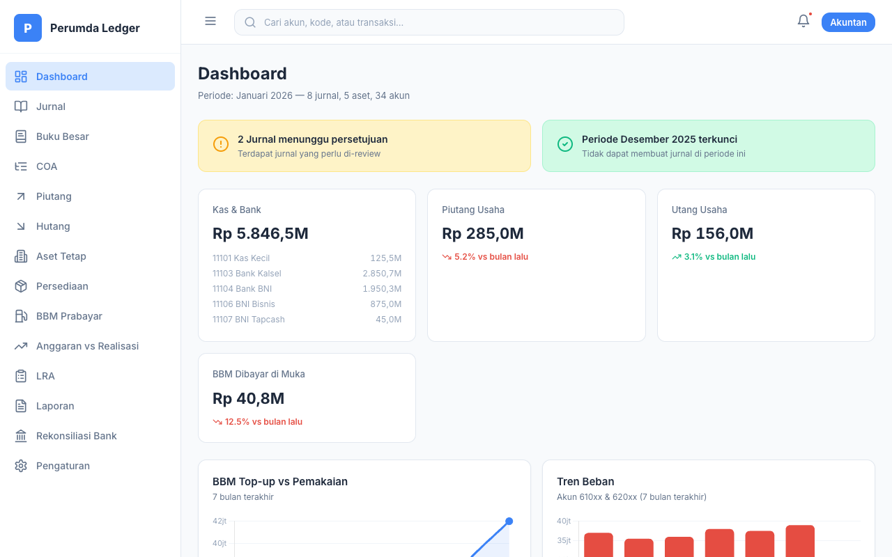
Cara Penggunaan (Step-by-Step)
- Navigasi Awal: Akses menu "Dashboard" dari sidebar sebelah kiri setiap kali Anda login ke sistem.
- Tinjau KPI Cards: Perhatikan deretan kotak di bagian atas untuk mengetahui posisi metrik inti secara real-time: Total Pendapatan, Total Beban, Laba/Rugi Bersih, dan Saldo Kas & Bank bulan ini.
- Periksa Peringatan (Alerts): Lihat baris peringatan di atas grafik. Apabila muncul tulisan "Terdapat X Jurnal Pending", segera arahkan kursor ke menu "Jurnal" untuk melakukan persetujuan (approval).
- Interaksi Grafik: Grafik BBM dan Tren Beban bersifat interaktif. Anda dapat mengarahkan kursor mouse (hover) pada batang/titik grafik untuk melihat nominal eksaknya per bulan.
Detail Fitur
| Fitur | Keterangan |
|---|
| KPI Cards Utama | Memuat Total Pendapatan, Total Beban, Laba/Rugi, dan Saldo Kas & Bank. Berwarna merah/hijau menyesuaikan indikator positif atau negatif. |
| Sistem Peringatan (Alert) | Menampilkan notifikasi krusial seperti "Terdapat Jurnal Pending" dan status apakah "Periode Terkunci" untuk mencegah ketidaksinkronan data. |
| Grafik BBM (Line Chart) | Memvisualisasikan tren top-up dibandingkan pemakaian bahan bakar (solar) selama 7 bulan terakhir, membantu mendeteksi pemborosan. |
Use Case (POV User - Manajer Keuangan):
"Saat saya baru sampai di kantor jam 8 pagi, saya langsung membuka Dashboard. Saya melihat label hijau 'Total Kas: Rp 5,8 Miliar' dan merasa aman, namun di kotak peringatan ada tulisan 'Terdapat 3 Jurnal Pending'. Saya menyadari staf saya bekerja lembur semalam untuk mencatat tagihan, jadi saya tahu pagi ini saya harus mengklik menu Jurnal untuk segera me-review dan menyetujui transaksi tersebut agar pembukuan sinkron."
2 Jurnal Umum
/jurnal
Modul krusial untuk mencatat seluruh transaksi finansial dengan prinsip double-entry accounting. Modul ini menjadi pusat masuknya seluruh data keuangan yang akan otomatis mempengaruhi buku besar dan laporan laba rugi.
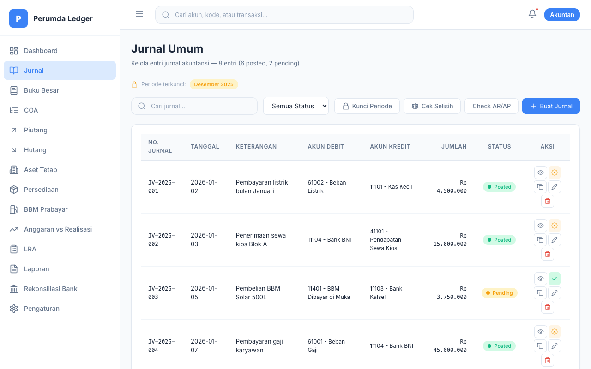
Cara Penggunaan (Step-by-Step)
- Membuat Jurnal Baru: Klik tombol biru "Buat Jurnal Baru" di pojok kanan atas. Akan muncul popup form. Pilih tanggal transaksi, dan masukkan "Keterangan" jurnal secara spesifik.
- Mengisi Baris Debit/Kredit: Pada baris pertama tabel popup, pilih Akun Debit dari dropdown list dan masukkan nominal uangnya. Pada baris kedua, pilih Akun Kredit dan masukkan nominal yang persis sama. Jika sudah Balance, klik tombol "Simpan".
- Menyetujui (Approve) Jurnal: Jurnal yang baru disimpan akan masuk ke tabel dengan status warna kuning (Pending). Cari jurnal tersebut, lalu klik ikon Centang (Approve) di kolom "Aksi" paling kanan agar statusnya menjadi hijau (Posted). Transaksi belum merubah saldo laporan keuangan sebelum di-Approve.
- Mengunci Periode Akhir Bulan: Pada saat tutup buku (misal: akhir Januari), klik tombol abu-abu "Kunci Periode", pilih bulan Januari dan tahunnya, lalu klik tombol "Kunci". Semua jurnal di Januari akan tergembok dan tidak dapat diedit/dihapus lagi untuk mengamankan data audit.
- Memverifikasi Keseimbangan Data: Secara berkala, klik tombol "Cek Selisih". Sistem akan men-scan seluruh database untuk memastikan tidak ada input jurnal asimetris dan memastikan akun AR/AP sudah selaras dengan modul hutang/piutang.
Detail Fitur
| Fitur | Keterangan |
|---|
| CRUD Jurnal | Buat, Baca, Perbarui, dan Hapus jurnal. Transaksi harus memiliki nilai debit dan kredit yang sama (Balance). |
| Sistem Approval | Jurnal yang baru dibuat otomatis berstatus Pending dan tidak mengubah buku besar sampai di-approve. |
| Check AR/AP Sync | Memverifikasi apakah catatan Hutang/Piutang di jurnal umum memiliki selisih dengan tabel Hutang/Piutang di modul lain. |
Use Case (POV User - Staf Akuntan):
"Hari ini tiba saatnya membayar gaji bulanan. Saya menekan 'Buat Jurnal Baru', lalu memasukkan akun Beban Gaji di baris pertama sebesar Rp 45.000.000, dan mengurangi Kas Besar di baris kedua dengan jumlah yang sama. Karena otorisasi saya terbatas, setelah saya klik 'Simpan', statusnya masih kuning ('Pending'). Saya kemudian memberi pesan kepada Supervisor saya untuk menekan tombol 'Approve' agar saldo perusahaan benar-benar terpotong di buku besar."
3 Chart of Accounts (COA)
/coa
Bagan Akun (Chart of Accounts) yang menjadi fondasi klasifikasi transaksi perusahaan. Terdiri dari struktur hierarki pohon yang rapi dan mematuhi klasifikasi akuntansi dasar: Aset, Kewajiban, Ekuitas, Pendapatan, dan Beban.
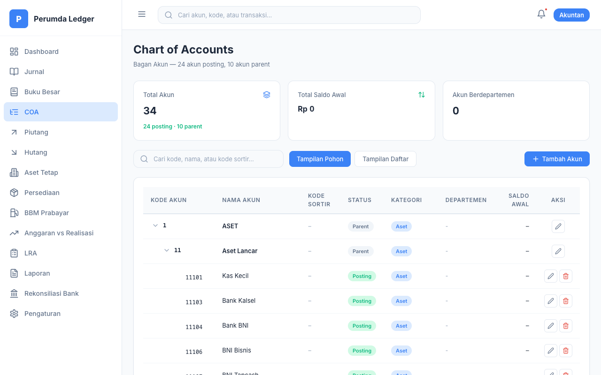
Cara Penggunaan (Step-by-Step)
- Mengganti Tampilan COA: Di pojok kanan atas area tabel, tekan tombol toggle "Pohon" atau "Daftar". Tampilan pohon berfungsi untuk melihat urutan hirarki (Parent-Child), sedangkan tampilan daftar lebih mudah digunakan untuk disortir.
- Menambahkan Akun Baru: Klik "Tambah Akun". Masukkan Kode Akun (cth: 61005). Pilih tipe akun: "Posting" (untuk transaksi) atau "Parent" (hanya sebagai induk folder). Masukkan Nama Akun, lalu kaitkan ke Parent yang sesuai (misal: Beban Operasional).
- Menentukan Departemen: Pada popup form yang sama, manfaatkan opsi "Departemen". Pilihlah departemen yang relevan (misal: "Tim Pemasaran") agar laporan Laba/Rugi kelak dapat dipisahkan per-departemen/proyek.
- Mengisi Saldo Awal Tahun: Khusus pada saat setup aplikasi pertama kali di awal tahun, klik edit pada suatu akun, kemudian masukkan nominal "Saldo Awal" (contoh: 50.000.000). Klik "Simpan". Nilai ini akan menjadi pijakan saldo awal Neraca tanpa harus membuat Jurnal Umum.
Detail Fitur
| Fitur | Keterangan |
|---|
| Tampilan Pohon (Tree View) | Menampilkan hierarki parent-child akun yang dapat di-expand/collapse untuk visibilitas yang lebih rapi. |
| Pengisian Saldo Awal | Memungkinkan input awal neraca tahun buku pada saat setup awal aplikasi akuntansi. |
Use Case (POV User - Admin Keuangan):
"Perusahaan baru saja bekerja sama dengan asuransi kesehatan swasta. Saya butuh akun baru untuk mencatat premi bulanannya. Saya buka menu COA, klik 'Tambah Akun', menamainya 'Beban Asuransi Pegawai' (61009) di bawah induk 'Beban Operasional'. Agar biaya ini jelas peruntukannya, saya juga men-set opsi departemen ke 'Tim SDM'. Kini, staf kasir bisa mulai mencatat jurnal transfer premi ke akun tersebut."
4 Buku Besar (General Ledger)
/buku-besar
Buku besar menampilkan perincian riwayat tiap transaksi untuk satu akun tertentu. Kalkulasi saldo akhir (running balance) dilakukan secara otomatis setiap kali sebuah jurnal di-approve.
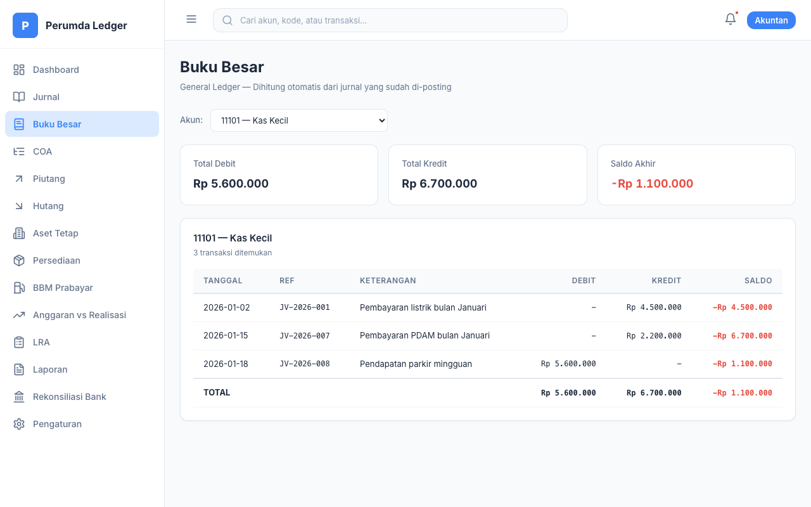
Cara Penggunaan (Step-by-Step)
- Memilih Akun untuk Dianalisis: Klik tombol dropdown "Pilih Akun" di bagian header. Ketik nama atau kode akun (misal: "Kas Besar"), lalu pilih. Tabel di bawahnya akan seketika ter-refresh menampilkan riwayat mutasi akun tersebut.
- Membaca Kolom Saldo (Running Balance): Perhatikan lajur paling kanan tabel. Lajur ini menunjukkan saldo uang/nilai akun secara kronologis dari atas ke bawah. Setiap transaksi debit atau kredit pada baris bersangkutan otomatis menambah/mengurangi saldo dari baris sebelumnya.
- Mengecek Ringkasan Akun: Lihat ketiga kotak putih di bagian atas. Kotak ini memberikan Anda resume hitungan kasar berupa Total perputaran Debit bulan tersebut, Total perputaran Kredit, dan Saldo Akhir saat ini. Ini sangat membantu pencocokan dengan rekening koran tanpa harus menghitung manual.
Detail Fitur
| Fitur | Keterangan |
|---|
| Perhitungan Saldo Berjalan | Kalkulasi kolom Saldo secara kumulatif dari atas ke bawah untuk tiap baris transaksi sehingga saldo kapan pun dapat diketahui. |
| Ringkasan KPI | Total Debit, Total Kredit, serta Saldo Akhir yang terpampang di card atas dengan pewarnaan otomatis berdasarkan saldo normal akun. |
Use Case (POV User - Auditor Internal):
"Direktur bertanya mengapa beban listrik operasional bulan ini bengkak tak wajar. Saya buka halaman Buku Besar dan mencari akun '61002 - Beban Listrik'. Di layar, saya memeriksa kronologis pembayaran listrik sepanjang tahun dari atas ke bawah. Ternyata di bulan ini, ada dua kali pembayaran tercatat dengan nominal persis sama di tanggal berdekatan (double entry). Saya langsung tahu ada human-error dari bagian kasir yang perlu dikoreksi."
5 Piutang Usaha (AR)
/piutang
Modul Accounts Receivable (AR) untuk memonitor tagihan kepada pelanggan atau pihak ketiga, dilengkapi dengan laporan umur piutang (Aging Schedule) guna mengoptimalkan cash flow.
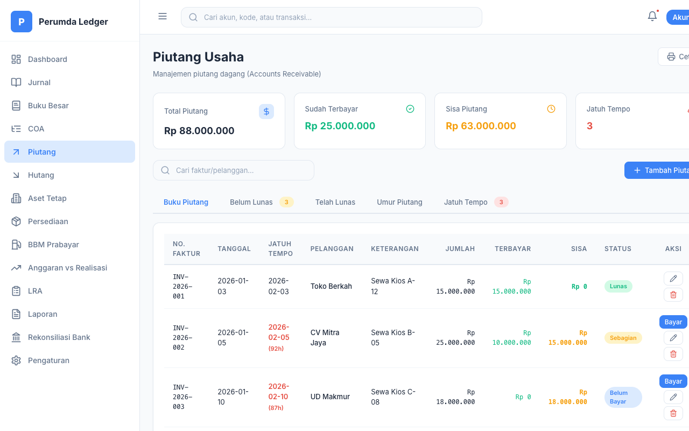
Cara Penggunaan (Step-by-Step)
- Mendaftarkan Tagihan Baru: Klik "Tambah Piutang". Di popup yang muncul, masukkan Nomor Faktur/Invoice (wajib), Nama Pelanggan, Total Nominal tagihan, dan Tanggal Jatuh Tempo. Klik "Simpan".
- Menerima Cicilan/Pembayaran: Cari faktur tagihan di tab "Belum Lunas". Klik tombol hijau berikon uang (Bayar) pada kolom Aksi. Masukkan nominal uang yang baru saja ditransfer klien kepada Anda. Jika masih ada sisa, statusnya akan berubah menjadi kuning "Sebagian". Jika sudah lunas nol rupiah, statusnya otomatis berubah menjadi hijau "Lunas".
- Monitoring Penunggakan (Aging Report): Klik tab "Umur Piutang" di deretan atas. Layar akan menampilkan matriks canggih yang mengelompokkan klien mana saja yang tagihannya belum lewat waktu, dan siapa saja yang sudah membandel telat 1-30 Hari, 31-60 Hari, 61-90 Hari, hingga >90 Hari (piutang rawan macet).
- Fokus Pada Tindakan (Follow Up): Klik tab "Jatuh Tempo". Ini akan menyaring dan hanya menampilkan list perusahaan/klien yang tanggalnya sudah melewati hari ini (merah). Berikan daftar dari tab ini ke tim kolektor untuk segera dihubungi.
Detail Fitur
| Fitur | Keterangan |
|---|
| Tab Lunas & Belum Lunas | Memisahkan dengan jelas mana invoice yang sudah terbayar dan mana yang masih tertunggak (Belum lunas/Sebagian). |
| Umur Piutang (Aging Report) | Tab analitik yang mengelompokkan outstanding balance ke dalam rentang waktu bucket standar akuntansi. |
Use Case (POV User - Bagian Penagihan):
"Setiap hari Senin pagi, saya rutin menekan tab 'Jatuh Tempo'. Hari ini, nama 'Toko Abadi' menyala merah karena telat 5 hari. Saya segera menelepon pemilik toko untuk menanyakan pembayarannya. Ia mentransfer cicilan setengahnya hari itu juga. Saya buka sistem, klik tombol 'Bayar' di baris Toko Abadi dan memasukkan angka cicilan. Otomatis, status di layar berubah dari 'Belum Lunas' menjadi 'Sebagian', dan saya tahu sisa tagihannya masih harus saya follow-up minggu depan."
6 Hutang Usaha (AP)
/hutang
Sistem pencatatan Accounts Payable (AP) untuk memantau tagihan yang harus dibayar oleh perusahaan kepada supplier atau pihak vendor. Secara sistematis serupa dengan modul Piutang.
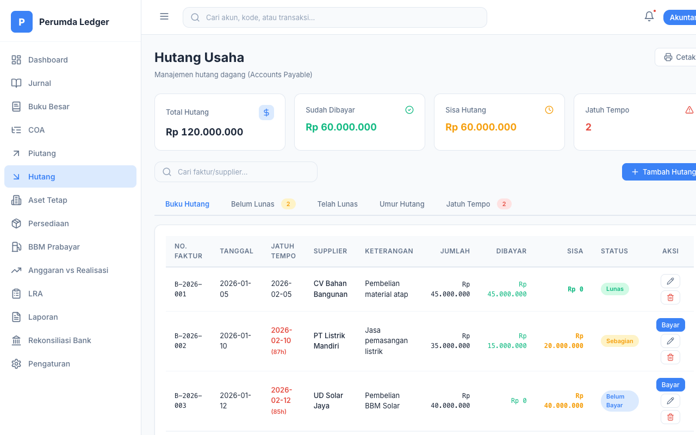
Cara Penggunaan (Step-by-Step)
- Mendaftarkan Kewajiban Pembayaran: Saat perusahaan menerima invoice beli, klik "Tambah Hutang". Masukkan Nomor Faktur dari Supplier, Nama Supplier, Total Tagihan yang harus dibayar perusahaan, dan pastikan Tanggal Jatuh Tempo terisi dengan akurat sesuai termin vendor (misal Net-30).
- Melakukan Eksekusi Pembayaran: Saat bagian kasir melakukan transfer bank ke supplier, segera buka aplikasi ini, cari faktur tersebut di tab "Belum Lunas", klik tombol Bayar. Isikan angka transfer, kemudian sistem akan memotong jumlah Sisa hutang tersebut.
- Perencanaan Kas Eksekusi Hutang: Secara rutin, manajer klik tab "Umur Hutang". Sistem akan menjabarkan nominal Rupiah yang mendesak untuk segera disiapkan dananya oleh perusahaan pada bracket 30 hari ke depan, untuk memastikan kelancaran rantai suplai (supply chain).
Detail Fitur
| Fitur | Keterangan |
|---|
| Kategorisasi Status Tagihan | Dibagi dalam beberapa tab (Buku Hutang, Belum Lunas, Telah Lunas) untuk menghindari double-payment atau denda karena lupa bayar. |
| Aging Report Hutang | Membantu manajemen memprioritaskan tagihan mana yang paling krusial untuk dicairkan dalam waktu dekat. |
Use Case (POV User - Staf Treasury):
"Pihak supplier air (PDAM) menelpon bahwa tagihan tunggakan belum dibayar dan air akan diputus. Saya cukup panik, lalu saya membuka menu Hutang. Di tab 'Umur Hutang', saya melihat memang ada tagihan Rp 2 Juta nyangkut di kolom '1-30 Hari'. Rupanya faktur fisik itu sempat terselip di laci meja depan. Saya langsung meminta kasir utama untuk mentransfer uang, dan begitu berhasil, saya segera mengklik ikon pelunasan di sistem agar notifikasi tunggakan hilang dan catatan hutang kami bersih."
7 Aset Tetap (Fixed Assets)
/aset-tetap
Manajemen aset dengan otomatisasi depresiasi garis lurus (Straight Line Depreciation) mengacu pada standar akuntansi keuangan (SAK EP) Indonesia.
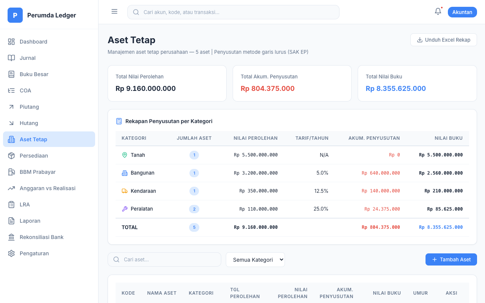
Cara Penggunaan (Step-by-Step)
- Setup Inventaris Baru: Setiap perusahaan membeli properti permanen, klik "Tambah Aset". Isi Kode Aset, Nama (Misal: Toyota Avanza), lalu pilih Kategori (Kendaraan). Kategori ini vital karena akan menentukan tarif deperesiasi persentase pajaknya secara otomatis.
- Mengisi Data Buku Aset: Lengkapi Tanggal Perolehan (penting untuk perhitungan mulai susut), Nilai Perolehan (Harga beli), dan tentukan Umur Manfaat-nya dalam angka tahun (contoh: 8 tahun). Aplikasi akan langsung mengkalkulasi tarif dan nilai potong tahunannya.
- Tracking Nilai Buku (Book Value): Anda tidak perlu menghitung penyusutan secara manual tiap bulan. Modul ini, berdasarkan tanggal perolehan yang Anda isi, akan menyusutkan nilai sisa aset tersebut berjalan sendirinya di tabel utama seiring berlalunya bulan dan tahun.
- Pelaporan Eksternal: Di pojok kanan, klik "Unduh Excel". Anda akan mendapatkan dokumen CSV terformat rapi berisi tabel registrasi seluruh aset kantor yang siap diserahkan kepada auditor pajak atau akuntan publik.
Detail Fitur
| Fitur | Keterangan |
|---|
| Standar Penyusutan SAK EP | Perhitungan otomatis nilai tarif depresiasi tahunan berdasarkan pemilihan umur ekonomis dan kategori aset. |
| Hitung Penyusutan Berjalan | Sistem mengkalkulasi secara otomatis berapa nilai penyusutan dan buku hingga tahun/bulan yang berjalan dari titik tanggal awal perolehan. |
Use Case (POV User - Manajer Umum/Aset):
"Bulan ini kami memborong 3 unit AC Daikin baru untuk kantor dengan nilai total Rp 15 Juta. Dulu, saya mencatat semuanya di Excel dan repot menghitung susut tiap akhir tahun. Sekarang, saya tinggal buka menu Aset Tetap, klik Tambah Aset, masukkan nama 'AC Daikin 2PK', Kategori 'Peralatan', Umur 4 Tahun. Begitu saya klik simpan, sistem secara ajaib langsung menghitung depresiasi tahunannya (Rp 3,75 Juta/tahun) dan nilai bukunya akan terus memotong otomatis tanpa saya apa-apakan lagi."
8 Persediaan (Inventory)
/persediaan
Modul ringan inventory management untuk melacak in-out stok barang/material, mencatat nilai inventaris secara realtime dengan peringatan "Low Stock".
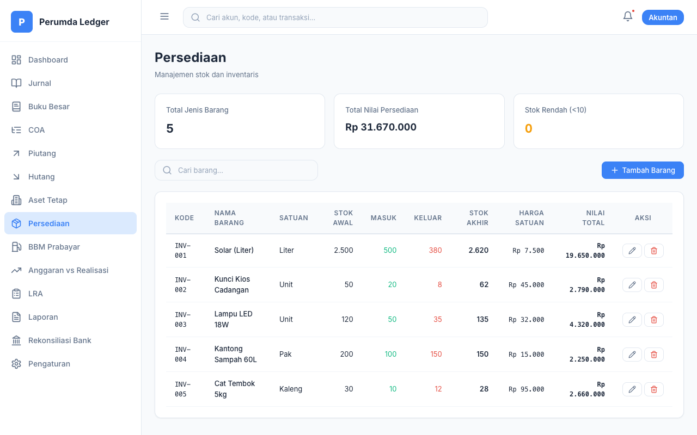
Cara Penggunaan (Step-by-Step)
- Menambah SKU Baru: Klik "Tambah Barang". Definisikan barang Anda: masukkan Kode Barang, Nama Item (cth: "Tinta Epson L3110"), pilih Satuan barang (Botol/Karton/Lusin), dan cantumkan Harga Satuan belinya. Klik Simpan.
- Mencatat Mutasi Keluar-Masuk: Saat barang baru tiba atau dipakai, temukan barang di tabel, lalu klik tombol pensil Edit Mutasi di baris tersebut. Anda dapat mengetik angka di kolom "Masuk" jika ada restock, atau di kolom "Keluar" jika dipakai. Nilai stok akhirnya akan dihitung otomatis oleh sistem tanpa Anda perlu menjumlahkannya.
- Pemantauan Peringatan Kekurangan Stok: Saat Anda melihat tabel persediaan, perhatikan kolom Status. Jika suatu barang menyentuh sisa stok kurang dari 10 satuan, indikator merah "Low Stock" akan menyala menyolok. Ini merupakan sinyal agar tim pengadaan (purchasing) segera melakukan pesanan ulang ke supplier.
Use Case (POV User - Kepala Gudang):
"Seorang staf sekretariat datang ke gudang dengan membawa bon bon untuk mengambil 5 rim kertas. Saya persilakan, lalu saya membuka komputer, klik menu Persediaan, cari 'Kertas HVS A4', tekan ikon pensil, dan mengisi angka '5' di kolom barang 'Keluar'. Begitu saya simpan, tiba-tiba muncul ikon peringatan 'Low Stock' berwarna merah menyala di layar karena sistem mendeteksi sisa kertas di gudang tinggal 8 buah. Saya pun langsung mencetak form pengajuan pembelian agar kertas tidak sampai kehabisan total besok hari."
9 BBM Prabayar
/bbm-prabayar
Fitur spesifik pengelolaan volume bahan bakar (Fuel Management System) sebagai aset lancar, dengan pembukuan pembelian (top-up) berbanding konsumsi per liter.
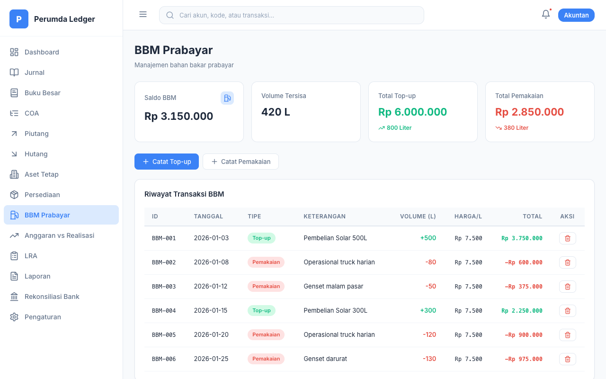
Cara Penggunaan (Step-by-Step)
- Mencatat Pengisian Ulang Stok: Saat perusahaan melakukan deposit bahan bakar, klik tombol "Catat Top-up". Isi Keterangan (contoh: "Deposit Voucher Pertamina"), kemudian masukkan berapa Liter yang dibeli, dan Harga per Liternya. Saldo Liter dan Rupiah akan segera bertambah di papan indikator atas.
- Mencatat Potongan Penggunaan Harian: Ketika armada mengambil bensin harian, tekan tombol "Catat Pemakaian". Cukup masukkan Keterangan divisi mana yang meminjam dan jumlah "Liter" yang mereka isi. Sistem akan secara cerdas memotong saldo volume Liter yang ada di persediaan.
- Rekapitulasi Konsumsi: Pada tabel "Riwayat Transaksi BBM", manajer bisa menilik semua jejak lalu lintas BBM dan langsung mengetahui apakah sisa bensin menipis atau tidak melalui kartu biru di atas yang menampilkan persis "Volume Tersisa Saat Ini".
Use Case (POV User - Koordinator Logistik Kendaraan):
"Sopir truk pengangkut kami akan berangkat ke luar kota dan meminta jatah kuota solar. Saya acc berikan 50 Liter. Di sistem, saya menekan 'Catat Pemakaian' dan memasukkan angka 50L. Bar kotak warna biru di bagian atas langsung terpotong, menunjukkan angka real-time sisa stok deposit BBM perusahaan sekarang tinggal 950L. Kalau angkanya sudah menyentuh 100L minggu depan, saya tahu saya harus telepon SPBU langganan untuk mentransfer deposit ulang (Top-up)."
10 Anggaran vs Realisasi
/anggaran-realisasi
Panel instrumen visual perbandingan pos pengeluaran rencana (Budget) dengan beban sesungguhnya (Actual), sangat berguna untuk menghindari kebocoran dana keuangan divisi operasional.
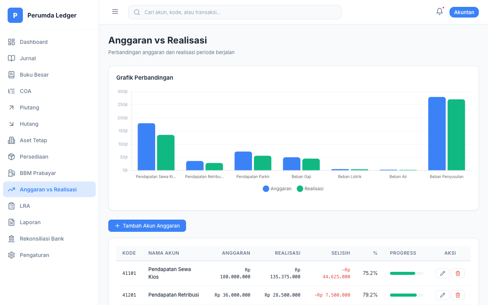
Cara Penggunaan (Step-by-Step)
- Menetapkan Pagu Anggaran (Budgeting): Di awal tahun/bulan, klik "Tambah Akun", pilih akun yang bersifat biaya (berkode awalan 6xxx, misal: Beban Operasional), lalu isi jumlah maksimal pagu Anggaran Rupiah yang diizinkan untuk dibelanjakan.
- Pemantauan Harian Tanpa Input Manual: Anda tidak perlu menginput realisasi di halaman ini! Modul Anggaran akan bekerja secara ajaib menarik data beban aktual secara real-time dari "Jurnal Umum" yang di-post oleh tim pembukuan.
- Interpretasi Progress Bar Visual: Cukup lihat tabel di kolom "Progress". Bar hijau melambangkan aman (kuota pemakaian di bawah 80%). Bar kuning menandakan waspada (kuota pemakaian 80%-95%). Bar merah berarti lampu darurat: budget sudah kritis (>95%) atau malah sudah melebihi limit plafon yang ditentukan.
- Perubahan Cepat: Jika dirasa budget perlu disuntik dana tambahan (revisi plafon), klik langsung angka di kolom "Anggaran" pada baris tersebut. Kolom akan berubah menjadi input text, ketikkan nilai barunya, dan tekan Enter untuk menyimpan saat itu juga.
Use Case (POV User - Direktur Operasional):
"Bulan lalu kami menetapkan disiplin anggaran bahwa jatah uang pengeluaran ATK maksimal Rp 3.000.000 saja. Saat ini baru pertengahan bulan, tanggal 15. Tapi saat saya sekilas melihat modul Anggaran, warna bar 'Beban ATK' sudah menyala MERAH dan mencatat angka realisasi Rp 2.900.000 (96% habis). Menyadari ada pemborosan tak wajar, saya segera memanggil kepala bagian administrasi dan melarang divisi manapun membeli ATK sampai akhir bulan depan."
11 Laporan Keuangan Lengkap
/laporan
Modul paripurna dengan lebih dari 25 sub-variasi laporan keuangan berstandar akuntan. Seluruh laporan mendukung layouting untuk pencetakan dokumen A4 maupun konversi XLSX (Excel).
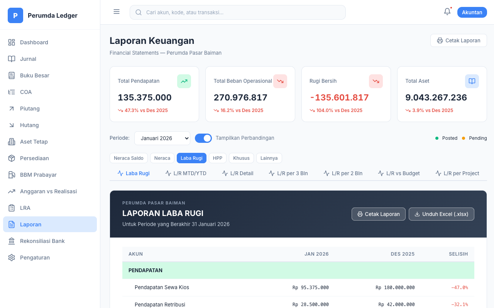
Cara Penggunaan (Step-by-Step)
- Memilih Laporan Inti: Perhatikan tombol-tombol oval di baris atas (Grup Laporan). Klik salah satu kategori (misal: "Laba Rugi"). Setelah diklik, baris kedua di bawahnya akan berubah menyesuaikan varian laporannya. Klik varian yang diinginkan (misal: "L/R MTD/YTD").
- Ubah Parameter Waktu: Di sebelah baris laporan, Anda akan menemukan dropdown "Periode". Pilih bulan pelaporan yang akan di-generate oleh sistem. Laporan di bawahnya akan tergambar ulang sesuai waktu yang diplih.
- Analisis Trend (Toggle Komparasi): Klik tombol switch "Tampilkan Perbandingan". Layout dokumen seketika bergeser untuk menambahkan kolom dari bulan/tahun sebelumnya beserta porsi pertumbuhan % nya (hijau untuk hemat/untung, merah untuk merugi). Sangat baik untuk bahan presentasi manajerial.
- Ekspor & Pencetakan: Lihat ke kanan atas dokumen laporan virtual Anda. Terdapat 2 tombol utama. Klik "Cetak Laporan" untuk mengaktifkan dialog Print Browser (pastikan set ke PDF A4). Klik "Unduh Excel" untuk mengambil format mentahnya sehingga Anda bisa menambahkan rumus/chart di Microsoft Excel sendiri.
Grup dan Detail Laporan Tersedia
| Kelompok | Daftar Laporan yang Tersedia |
|---|
| Neraca Saldo | Standar | Per Tanggal | Per Tipe Akun |
| Neraca (Aset & Pasiva) | Laporan Standar | MTD/YTD | Detail | Komparasi Per 3 Bulan |
| Laba Rugi (P&L) | P&L Standar | MTD/YTD | Detail | Per 3 Bulan (Triwulan) | Per 2 Bulan | P&L vs Budget | Per Project (Departemen) |
| Alat Tambahan | HPP | Laporan Perubahan Ekuitas | Arus Kas | CALK | Laporan Analisis Rasio Bisnis |
Fitur Baru: Laporan Dinamis Per Bulan
| Laporan | Keterangan |
|---|
| L/R per 3 Bulan (Triwulan) | Menampilkan perbandingan Laba/Rugi untuk 3 bulan terakhir secara mundur (reverse chronological). Contoh: jika Anda memilih periode April, kolom akan ditampilkan: April → Maret → Februari. Data dihitung langsung dari jurnal yang sudah di-posting di database. |
| L/R per 2 Bulan | Perbandingan Laba/Rugi bulan berjalan vs bulan lalu, lengkap dengan kolom Selisih dan % Pertumbuhan. Urutan juga mundur: bulan terbaru di kolom kiri. |
| Neraca per 3 Bulan | Komparasi posisi keuangan (Aset, Kewajiban, Ekuitas) untuk 3 bulan terakhir secara mundur. |
Use Case (POV User - Manajer Akuntansi & Pajak):
"Besok siang ada rapat penting dengan dewan direksi untuk evaluasi kinerja. Saya masuk ke menu Laporan, klik tab Laba Rugi, lalu sub-tab 'L/R per 3 Bln'. Di layar, saya langsung bisa melihat tren pendapatan dan beban selama tiga bulan terakhir — April, Maret, dan Februari — dalam satu tabel. Kolom paling kiri menampilkan bulan terbaru sehingga saya bisa langsung fokus pada data terkini. Saya juga menggeser tombol 'Tampilkan Perbandingan' untuk melihat selisih persentase antar bulan. Karena saya perlu mengolah angkanya lebih dalam untuk slide PowerPoint presentasi, saya tekan tombol 'Unduh Excel' agar tabelnya langsung bisa saya edit di laptop saya."
12 Laporan Realisasi Anggaran (LRA)
/lra
Halaman laporan formal yang mendetailkan realisasi anggaran dalam format dokumen cetak resmi berstandar SAK EP. Data ditarik langsung dari database server (SQLite) secara real-time dan tersedia dalam 8 sub-laporan terpisah.
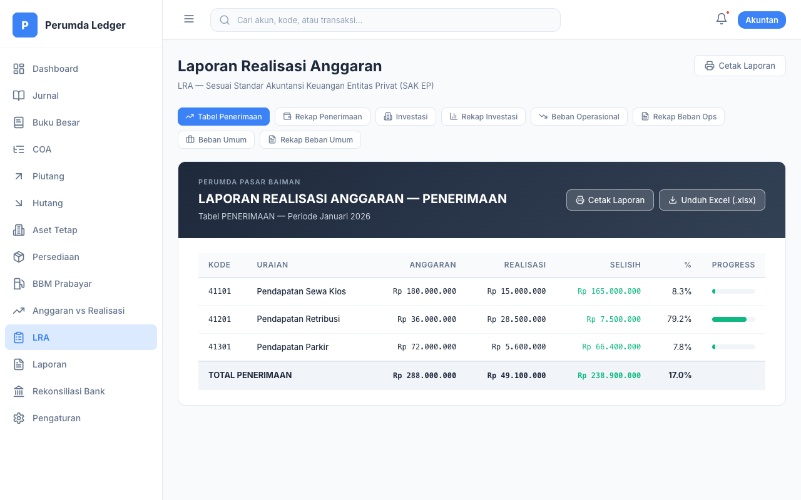
Cara Penggunaan (Step-by-Step)
- Menavigasi Bab Anggaran: Di halaman ini, klik salah satu dari 8 tombol tab (Tabel Penerimaan, Rekap Penerimaan, Investasi, Rekap Investasi, Beban Operasional, Rekap Beban Ops, Beban Umum, Rekap Beban Umum). Tabel akan menyesuaikan fokus pada sektor anggaran yang bersangkutan.
- Membaca Tabel Detail: Pada tab "Tabel", setiap baris menampilkan Kode, Uraian, Anggaran (plafon), Realisasi (pencairan aktual), Selisih (sisa dana), Persentase (%), dan Progress Bar Visual berwarna hijau/kuning/merah.
- Membaca Rekap (KPI Cards): Pada tab "Rekap", Anda akan melihat 3 kotak besar di atas: Total Anggaran, Total Realisasi, dan Sisa Anggaran. Di bawahnya, tabel menampilkan label status evaluasi: "Terealisasi" (hijau, ≥90%), "Berjalan" (oranye, 50-89%), "Rendah" (merah, <50%), atau "Belum" (abu, 0%).
- Laporan Cetak Final (Export): Pada setiap tab, klik tombol "Cetak Laporan" atau "Unduh Excel (.xlsx)" di pojok kanan header laporan. Format cetak mengikuti kop dan standar LRA BUMD/SAK EP.
8 Sub-Laporan LRA
| Tab | Keterangan |
|---|
| Tabel Penerimaan | Detail per-baris penerimaan usaha dengan progress bar visual dan persentase penyerapan. |
| Rekap Penerimaan | Rekapitulasi KPI penerimaan per 3 bulan (Triwulan) dengan status badge. |
| Investasi | Detail realisasi belanja modal/investasi beserta selisih dari pagu anggaran. |
| Rekap Investasi | Ringkasan total anggaran vs realisasi investasi dengan status evaluasi. |
| Beban Operasional | Detail belanja operasional harian (listrik, air, transportasi, dll). |
| Rekap Beban Ops | Rekapitulasi seluruh pos beban operasional dengan status penyerapan. |
| Beban Umum | Detail belanja umum (gaji, tunjangan, pemeliharaan, dll) — 30+ pos anggaran. |
| Rekap Beban Umum | Ringkasan total seluruh beban umum dengan evaluasi kinerja penyerapan. |
Use Case (POV User - Kepala Sub-Bagian Perencanaan):
"Tiba saatnya tenggat waktu laporan kuartal pertama. Pemerintah daerah (Pemda) mewajibkan kami menyerahkan form pertanggungjawaban LRA standar. Dulu kami butuh berhari-hari menjahit data. Sekarang, saya cukup membuka modul LRA ini, mengklik tab 'Rekap Beban Ops', lalu menekan tombol 'Cetak Laporan'. Printer saya langsung mengeluarkan selembar kertas ber-Kop Surat Perumda yang rapi, berisi rekapitulasi penyerapan dana, tingkat persentase progres yang akurat secara Rupiah, sah dan langsung siap saya serahkan ke ruang direktur untuk ditandatangani."
13 Rekonsiliasi Bank
/rekonsiliasi-bank
Instrumen untuk mengakurkan / mencocokkan uang di buku kas sistem dengan print-out Rekening Koran dari Bank, mengidentifikasi kebocoran yang tidak wajar atau fee bank terlewat.
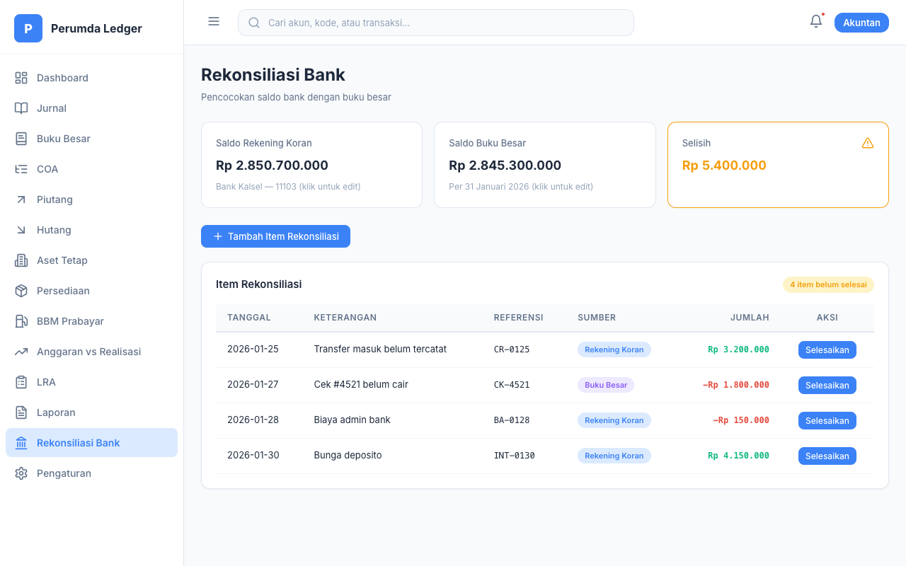
Cara Penggunaan (Step-by-Step)
- Input Saldo Rujukan (Base Setup): Ambil lembaran Rekening Koran mutasi Anda, baca saldo akhirnya. Klik langsung angka yang tertera di layar pada kotak "Saldo Rekening Koran Bank", lalu ketikkan angka mutasi tersebut. Lakukan hal serupa di kotak "Saldo Buku Besar Perusahaan" dengan saldo menurut Jurnal Anda.
- Observasi Indikator Selisih: Kotak ketiga, yakni "Selisih Belum Dijelaskan", akan otomatis berkedip warna merah/kuning jika ada perbedaan antara Uang Nyata vs Uang Sistem. Tujuan Anda adalah membuat kotak ini menjadi Nol Rupiah (Hijau).
- Mendaftarkan Transaksi "Siluman" / Gantung: Klik "Tambah Item Penyesuaian". Jika ada potongan admin bank yang belum Anda catat, masukkan Keterangan "Biaya Admin Bulanan", tentukan Sumber selisih dari "Bank", dan isikan nominalnya (contoh: 15.000).
- Clearance (Penyelesaian): Kotak selisih kini menjadi nol setelah item dimasukkan. Berikutnya, tugaskan staf Anda untuk mencatat biaya admin 15.000 tersebut ke Menu "Jurnal Umum". Setelah itu dilakukan, kembali ke halaman Rekonsiliasi ini, dan centang item gantung tadi menjadi "Selesaikan (Cleared)".
Use Case (POV User - Staf Rekonsiliasi Cash):
"Akhir bulan ini saya ditugaskan mencocokkan uang bank. Aplikasi sistem kami mencatat saldo bank BCA adalah Rp 10 Juta, tapi saat saya cek mutasi e-banking BCA asli, saldonya Rp 9.980.000. Kotak indikator selisih di layar berkedip menandakan missing Rp 20.000. Saya teliti lagi mutasi e-banking baris per baris, oh rupanya ada potongan Biaya Admin Bank sebesar dua puluh ribu yang luput tidak kami catat di jurnal. Saya lalu klik 'Tambah Item Penyesuaian', masukkan keterangan Biaya Admin Bank 20rb. Seketika kotak selisih menjadi Nol (Hijau Aman). Besoknya, saya minta staf input jurnal untuk mencatat biaya tersebut ke sistem agar selesai 100%."
14 Import Data Excel
/import-data
Fitur bulk-insert yang sangat menghemat waktu. Daripada memasukkan ribuan baris jurnal satu per satu, Anda bisa mengimpor file Excel langsung ke dalam database server.

Cara Penggunaan (Step-by-Step)
- Mengunduh Template: Klik "Download Template Jurnal". Akan terunduh sebuah file Excel kosong dengan header kolom yang sudah diformat khusus.
- Mengisi Data di Excel: Buka file tersebut, lalu isikan data transaksi Anda. Pastikan nama akun di kolom Debit/Kredit diketik sama persis dengan nama di COA Anda (misal: "11101 - Kas Kecil").
- Mengunggah File: Simpan file Excel Anda, lalu kembali ke aplikasi. Tarik dan lepas (drag-and-drop) file tersebut ke area kotak unggah putus-putus.
- Validasi Data: Sistem akan membaca file Anda dalam sepersekian detik dan menampilkan ringkasannya di layar. Jika ada baris yang cacat atau akun tidak dikenali, baris tersebut akan ditandai warna merah.
- Eksekusi Import: Jika semua baris valid dan berstatus "Siap di-import", klik tombol hijau "Proses Import ke Database". Ratusan jurnal Anda akan otomatis masuk ke sistem dan siap diakses di menu Jurnal.
Use Case (POV User - Staf Entri Data):
"Saya mendapat kiriman rekapitulasi 500 transaksi dari cabang pembantu dalam format Excel. Sangat membuang waktu jika saya harus memindahkannya satu-satu lewat menu Tambah Jurnal. Saya cukup masuk ke menu Import Data, menyesuaikan kolom Excel mereka dengan template kita, dan mengunggahnya. Hanya dalam waktu 3 detik, seluruh 500 transaksi tersebut sudah masuk ke dalam sistem dengan status balance!"
15 Pengaturan & Utilitas Sistem
/pengaturan
Cara Penggunaan (Step-by-Step)
- Menavigasi Panel Konfigurasi: Pilih area pengaturan melalui sidebar vertikal abu-abu (Profil Perusahaan, Pajak, Voucher, Data & Backup). Halaman sebelah kanannya akan otomatis menampilkan formulir opsi spesifik.
- Update Setup Master: Di tab Perusahaan, isi dengan lengkap Alamat dan Nama Direktur. Inputan ini sangat vital karena akan diserap secara serentak ke dalam seluruh *Header* atau Kop Surat modul Laporan Keuangan Anda. Begitu pula di tab Pajak, ubah tarif PPN jika ada ketetapan pemerintah terbaru (misal: 11% menjadi 12%). Tekan "Simpan Perubahan" di bagian paling bawah layar.
- Mengamankan Data (Backup Terjadwal): Sangat disarankan rutin masuk ke tab "Data & Backup". Klik tombol "Export (JSON Backup)". Komputer Anda akan mendownload sebuah file ringan. File ini berisi 100% jejak transaksi Anda, yang dapat diamankan ke Google Drive atau Flashdisk. Ingat, sistem ini menyimpan data secara lokal di Cache Browser, sehingga backup file adalah langkah penyelamatan utama dari kerusakan browser!
- Factory Reset (Hati-Hati): Tombol merah "Reset Semua Data" disediakan untuk keadaan ekstrem atau masa transisi uji-coba ke Production. Mengkliknya akan mengosongkan seluruh jurnal, akun, hutang-piutang dari aplikasi secara tidak bisa dipulihkan kembali.
Use Case (POV User - Admin IT Perusahaan):
"Hari ini tanggal 31 Desember. Saya bertanggung jawab memastikan tidak ada data akuntansi yang hilang selama liburan pergantian tahun. Saya masuk ke menu Pengaturan, memilih tab 'Data & Backup', lalu menekan tombol besar 'Export JSON Backup'. Sebuah file ringan ter-download seketika ke folder laptop saya, yang kemudian saya unggah ke Google Drive. Saya pulang kerja dengan tenang karena saya tahu, kalaupun besok laptop kasir rusak atau terserang virus, saya punya file sakti ini yang bisa me-restore kembali seluruh pembukuan satu tahun penuh ke keadaan semula."
Arsitektur & Tech Stack Sistem
Aplikasi Perumda Ledger dibangun menggunakan arsitektur modern JAMstack yang didukung dengan Server Node.js dan Database SQLite untuk skalabilitas tinggi.
| Komponen | Teknologi Utama | Keterangan Fungsi |
|---|
| Core Framework | React 18.3 & Vite 5.4 | Library utama (Single Page Application) yang merender UI dinamis tanpa reload halaman. Vite bertugas mem-build kode menjadi aset statis yang sangat ringan. |
| Server & Database | Node.js & SQLite3 | Penyimpanan persisten di sisi server untuk menangani volume data (jurnal) yang besar, menghilangkan kelemahan dan risiko hilang data pada sistem localStorage lawas. |
| Visualisasi Data (Chart) | Chart.js 4.4 & react-chartjs-2 | Mesin yang memproses data mentah neraca menjadi grafik interaktif (Doughnut, Bar, Line) di halaman Dashboard dan Laporan. |
| Pengekspor Dokumen | SheetJS (XLSX) & FileSaver.js | Generator instan yang merakit tabel data angka menjadi file dokumen Microsoft Excel murni (.xlsx) agar dapat diunduh kapan saja. |
| Desain Antarmuka (UI) | Vanilla CSS & Lucide React | Tampilan berkelas dirancang murni tanpa *framework* CSS berat. Dipercantik dengan font Inter dan ikon SVG super ringan dari Lucide. |
| Sistem Navigasi | React Router DOM 6.26 | Sistem rute yang mengelola perpindahan antar halaman (misal: dari `/jurnal` ke `/laporan`) secara mulus tanpa *loading* layaknya aplikasi *desktop native*. |
Peta Keberhasilan: Ringkasan Fungsional
| # | Nama Modul | Core Function | Estimasi Fitur Internal |
|---|
| 1 | Dashboard | Analitik Real-Time Pemimpin & Eksekutif | 5 Indikator Visual |
| 2 | Jurnal Umum | Mesin Perekam Buku Double-Entry | 10 Aksi (CRUD, Approve, Validasi) |
| 3 | Chart of Accounts | Organisasi Skema Hirarkis Akun Ledger | 10 Atribut Struktur |
| 4 | Buku Besar | Papan Cek Riwayat Mutasi Lengkap per Baris | 4 Analitik |
| 5 | Piutang Usaha | Lacak Uang Vendor + Jadwal Kadaluwarsa Cicilan | 10 Filtering Canggih |
| 6 | Hutang Usaha | Amanah Pelunasan + Jadwal Tempo Cicilan Supplier | 8 Filtering Canggih |
| 7 | Aset Tetap | Penyusutan Otomatis & Estimasi Masa Pakai Aset | 8 Alat Penghitung |
| 8 | Persediaan | Alarm Kehabisan Stock & Inventaris Masuk-Keluar | 6 Indikator Murni |
| 9 | BBM Prabayar | Kendali Volume Konsumsi Solar Logistik Real | 6 Perekam Numerik |
| 10 | Anggaran vs Realisasi | Rem Remaja Mencegah Anggaran Cepat Habis | 6 Gauge Indikator |
| 11 | Laporan Keuangan | Dapur Dokumen Rilis & Excel Audit (SAK EP) | 25+ Format Laporan Sah |
| 12 | LRA Anggaran Cetak | Rekapitulasi Khusus Penyerapan Dana Formal | 8 Sub-Section |
| 13 | Rekonsiliasi Bank | Inspektur Ketepatan Arus Uang Nyata Vs Angka | 6 Input Pengecekan |
| 14 | Import Data Excel | Bulk Insert Ratusan Jurnal secara Massal | Sistem Validasi Otomatis |
| 15 | Pengaturan Global | Jantung Konfigurasi Otoritas Aplikasi | 7 Domain Setup |